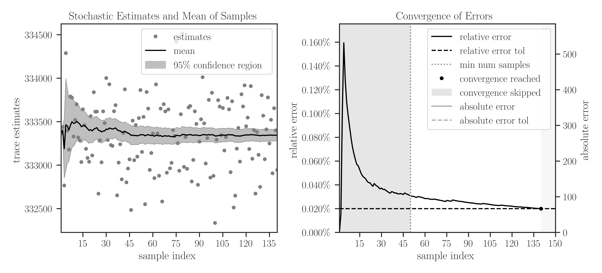

imate.traceinv(method=’hutchinson’)#
- imate.traceinv(A, gram=False, p=1, return_info=False, method='hutchinson', B=None, C=None, assume_matrix='gen', min_num_samples=10, max_num_samples=50, error_atol=None, error_rtol=0.01, confidence_level=0.95, outlier_significance_level=0.001, solver_tol=1e-06, orthogonalize=True, num_threads=0, verbose=False, plot=False)
See also
This page describes only the hutchinson method. For other methods, see
imate.traceinv().Trace of matrix or linear operator using stochastic Lanczos quadrature method.
If C is None, given the matrices \(\mathbf{A}\) and \(\mathbf{B}\) and the integer exponent \(p\), the following is computed:
\[\mathrm{trace} \left(\mathbf{B} \mathbf{A}^{-p} \right).\]If B is None, it is assumed that \(\mathbf{B}\) is the identity matrix.
If C is not None, given the matrix \(\mathbf{C}\), the following is instead computed:
\[\mathrm{trace} \left(\mathbf{B} \mathbf{A}^{-p} \mathbf{C} \mathbf{A}^{-p} \right).\]If
gramis True, then \(\mathbf{A}\) in the above is replaced by the Gramian matrix \(\mathbf{A}^{\intercal} \mathbf{A}\). Namely, if C is None:\[\mathrm{trace} \left(\mathbf{B} (\mathbf{A}^{\intercal}\mathbf{A})^{-p} \right),\]and if C is not None,
\[\mathrm{trace} \left(\mathbf{B} (\mathbf{A}^{\intercal}\mathbf{A})^{-p} \mathbf{C} (\mathbf{A}^{\intercal}\mathbf{A})^{-p} \right).\]- Parameters
- Anumpy.ndarray, scipy.sparse
A sparse or dense matrix.
Note
In the Hutchinson method, the matrix cannot be a type of
Matrixorimate.AffineMatrixFunctionclasses.- grambool, default=False
If True, the trace of the Gramian matrix, \((\mathbf{A}^{\intercal}\mathbf{A})^p\), is computed. The Gramian matrix itself is not directly computed. If False, the trace of \(\mathbf{A}^p\) is computed.
- pfloat, default=1.0
The integer exponent \(p\) in \(\mathbf{A}^{-p}\).
- return_infobool, default=False
If True, this function also returns a dictionary containing information about the inner computation, such as process time, algorithm settings, etc.
- Bnumpy.ndarray, scipy.sparse
A sparse or dense matrix. B should be the same size and type of A. if B is None, it is assumed that B is the identity matrix.
- Cnumpy.ndarray, scipy.sparse
A sparse or dense matrix. C should be the same size and type of A.
- assume_matrixstr {‘gen’, ‘sym’, ‘pos’, ‘sym_pos’}, default: ‘gen’
Type of matrix A:
genassumes A is a generic matrix.symassumes A is symmetric.posassumes A is positive-definite.sym_posassumes A is symmetric and positive-definite.
- min_num_samplesint, default=10
The minimum number of Monte-Carlo samples. If the convergence criterion is reached before finishing the minimum number of iterations, the iterations are forced to continue till the minimum number of iterations is finished. This value should be smaller than
maximum_num_samples.- max_num_samplesint, default=50
The maximum number of Monte-Carlo samples. If the convergence criterion is not reached by the maximum number of iterations, the iterations are forced to stop. This value should be larger than
minimum_num_samples.- error_atolfloat, default=None
Tolerance of the absolute error of convergence of the output. Once the error of convergence reaches
error_atol + error_rtol * output, the iteration is terminated. If the convergence criterion is not met by the tolerance, then the iterations continue till reachingmax_num_samplesiterations. If None, the termination criterion does not depend on this parameter.- error_rtolfloat, default=None
Tolerance of the relative error of convergence of the output. Once the error of convergence reaches
error_atol + error_rtol * output, the iteration is terminated. If the convergence criterion is not met by the tolerance, then the iterations continue till reachingmax_num_samplesiterations. If None, the termination criterion does not depend on this parameter.- confidence_levelfloat, default=0.95
Confidence level of error, which is a number between 0 and 1. The error of convergence of the population of samples is defined by their standard deviation times the Z-score, which depends on the confidence level. See notes below for details.
- outlier_significance_levelfloat, default=0.001
One minus the confidence level of the uncertainty of the outliers of the output samples. This is a number between 0 and 1.
- solver_tolfloat, default=1e-6
Tolerance of solving linear system.
- orthogonalizeint, default=0
If True, it orthogonalizes the set of random vectors used for Monte-Carlo sampling. This might lead to a better estimation of the output.
- num_threadsint, default=0
Number of processor threads to employ for parallel computation on CPU. If set to 0 or a number larger than the available number of threads, all threads of the processor are used. The parallelization is performed over the Monte-Carlo iterations.
- verbosebool, default=False
Prints extra information about the computations.
- plotbool, default=False
Plots convergence of samples. For this, the packages matplotlib and seaborn should be installed. If no display is available (such as running this code on remote machines), the plots are saved as an SVG file in the current directory.
- Returns
- traceinvfloat or numpy.array
Trace of inverse of matrix.
- infodict
(Only if
return_infois True) A dictionary of information with the following.matrix:data_type: str, {float32, float64, float128}. Type of the matrix data.gram: bool, whether the matrix A or its Gramian is considered.exponent: float, the exponent p in \(\mathbf{A}^p\).assume_matrix: str, {gen, sym, pos, sym_pos}, determines the type of matrix A.size: (int) The size of matrix A.sparse: bool, whether the matrix A is sparse or dense.nnz: int, if A is sparse, the number of non-zero elements of A.density: float, if A is sparse, the density of A, which is the nnz divided by size squared.num_inquiries: int, the size of inquiries of each parameter of the linear operator A. If A is a matrix, this is always 1. If A is a type ofAffineMatrixFunction, this value is the number of \(t_i\) parameters.
convergence:converged: bool, whether the Monte-Carlo sampling converged.min_num_samples: int, the minimum number of Monte-Carlo iterations.max_num_samples: int, the maximum number of Monte-Carlo iterations.num_outliers: int, number of outliers found during search for outliers among the array of output.num_samples_used: int, number of Monte-Carlo samples used to produce the output. This is the total number of iterations minus the number of outliers.samples: array [float], an array of the size max_num_samples. The first few entries (num_samples_used) of this array are the output results of the Monte-Carlo sampling. The average of these samples is the final result. The rest of this array is nan.samples_mean: float, mean of the samples array, excluding the nan values.samples_processed_order: array [int], in parallel processing, samples are processed in non-sequential order. This array, which has the same size as samples, keeps track of the order in which each sample is processed.
error:absolute_error: float, the absolute error of the convergence of samples.confidence_level: float, the confidence level used to calculate the error from standard deviation of samples.error_atol: float, the tolerance of absolute error of the convergence of samples.error_rtol: float, the tolerance of relative error of the convergence of samples.outlier_significance_level: float, the significance level used to determine the outliers in samples.relative_error: float, the relative error of the convergence of samples.
device:num_cpu_threads: int, number of CPU threads used in shared memory parallel processing.num_gpu_devices: int, number of GPU devices used in the multi-GPU (GPU farm) computation.num_gpu_multiprocessors: int, number of GPU multi-processors.num_gpu_threads_per_multiprocessor: int, number of GPU threads on each GPU multi-processor.
time:tot_wall_time: float, total elapsed time of computation.alg_wall_time: float, elapsed time of computation during only the algorithm execution.cpu_proc_time: float, the CPU processing time of computation.
solver:version: str, version of imate.method: ‘hutchinson’.solver_tol: float, tolerance of solving linear system.orthogonalize: bool, orthogonalization flag.
- Raises
- ImportError
If the package has not been compiled with GPU support, but
gpuis set to True. To resolve the issue, setgputo False to be able to use the existing installation. Alternatively, export the environment variableUSE_CUDA=1and recompile the source code of the package.
See also
Notes
Computational Complexity:
This method uses the Hutchinson, which is a randomized algorithm. The computational complexity of this method is
\[\mathcal{O}((\rho n^2s),\]where \(n\) is the matrix size, \(\rho\) is the density of sparse matrix (for dense matrix, \(\rho=1\)), and \(s\) is the number of samples (set with
min_num_samplesandmax_num_samples).This method can be used on very large matrices (\(n > 2^{12}\)). The solution is an approximation.
Convergence criterion:
Let \(n_{\min}\) and \(n_{\max}\) be the minimum and maximum number of iterations respectively defined by
min_num_samplesandmax_num_samples. The iterations terminate at \(n_{\min} \leq i \leq n_{\max}\) where \(i\) is the iteration counter. The iterations stop earlier at \(i < n_{\max}\) if the convergence error of the mean of the samples is satisfied, as follows.Suppose \(s(j)\) and \(\sigma(i)\) are respectively the mean and standard deviation of samples after \(j\) iterations. The error of convergence, \(e(j)\), is defined by
\[e(j) = \frac{\sigma(j)}{\sqrt{j}} Z\]where \(Z\) is the Z-score defined by
\[Z = \sqrt{2} \mathrm{erf}^{-1}(\phi).\]In the above, \(\phi\) is the confidence level and set by
confidence_levelargument, and \(\mathrm{erf}^{-1}\) is the inverse error function. A confidence level of 95%, for instance, means that the Z-score is 1.96, which means the confidence interval is \(\pm 1.96 \sigma\).The termination criterion is
\[e(j) < \epsilon_a + s(j) \epsilon_r,\]where \(\epsilon_{a}\) and \(\epsilon_r\) are the absolute and relative error tolerances respectively, and they are set by
error_atolanderror_rtol.Plotting:
If
plotis set to True, it plots the convergence of samples and their relative error.If no graphical backend exists (such as running the code on a remote server or manually disabling the X11 backend), the plot will not be shown, rather, it will be saved as an
svgfile in the current directory.If the executable
latexis available onPATH, the plot is rendered using \(\rm\LaTeX\) and it may take slightly longer to produce the plot.If \(\rm\LaTeX\) is not installed, it uses any available San-Serif font to render the plot.
To manually disable interactive plot display and save the plot as
svginstead, add the following at the very beginning of your code before importingimate:>>> import os >>> os.environ['IMATE_NO_DISPLAY'] = 'True'
References
Ubaru, S., Chen, J., and Saad, Y. (2017), Fast Estimation of \(\mathrm{tr}(F(A))\) Via Stochastic Lanczos Quadrature, SIAM J. Matrix Anal. Appl., 38(4), 1075-1099.
Examples
Basic Usage:
Compute the trace of \(\mathbf{A}^{-2}\):
>>> # Import packages >>> from imate import toeplitz, traceinv >>> # Generate a sample matrix >>> A = toeplitz(2, 1, size=100) >>> # Compute trace of inverse >>> traceinv(A, p=2, method='hutchinson') 24.73726368966402
Compute the trace of \((\mathbf{A}^{\intercal} \mathbf{A})^{-2}\):
>>> # Using Gramian matrix of A >>> traceinv(A, gram=True, p=2, method='hutchinson') 17.751659383784748
Compute the trace of \(\mathbf{B} \mathbf{A}^{-2}\):
>>> # Generate another sample matrix >>> B = toeplitz(4, 3, size=100) >>> # Using Gramian matrix of A >>> traceinv(A, p=2, method='hutchinson', B=B) 99.8817360381704
Compute the trace of \(\mathbf{B} \mathbf{A}^{-2} \mathbf{C} \mathbf{A}^{-2}\):
>>> # Generate another sample matrix >>> C = toeplitz(5, 4, size=100) >>> # Using Gramian matrix of A >>> traceinv(A, p=2, method='hutchinson', B=B, C=C) 124.45436379980006
Compute the trace of \(\mathbf{B} (\mathbf{A}^{\intercal} \mathbf{A})^{-2} \mathbf{C} (\mathbf{A}^{\intercal} \mathbf{A})^{-2}\):
>>> # Using Gramian matrix of A >>> traceinv(A, gram=True, p=2, method='hutchinson', B=B, C=C) 5.517453125230929
Verbose output:
By setting
verboseto True, useful info about the process is printed.>>> ti = traceinv(A, method='hutchinson', verbose=True) results ============================================================================== inquiries error samples -------------------- --------------------- --------- i parameters trace absolute relative num out converged ============================================================================== 1 none +5.014e+01 7.364e-01 1.469% 50 0 False config ============================================================================== matrix stochastic estimator ------------------------------------- ------------------------------------- gram: False method: hutchinson assumption: generic solver tol: 1.000e-06 exponent: 1 orthogonalization: True data type: 64-bit convergence error ------------------------------------- ------------------------------------- min num samples: 10 abs error tol: 0.000e+00 max num samples: 50 rel error tol: 1.00% outlier significance level: 0.00% confidence level: 95.00% process ============================================================================== time device ------------------------------------- ------------------------------------- tot wall time (sec): 2.967e-02 num cpu threads: 8 alg wall time (sec): 2.879e-02 num gpu devices, multiproc: 0, 0 cpu proc time (sec): 4.370e-02 num gpu threads per multiproc: 0
Output information:
Print information about the inner computation:
>>> ti, info = traceinv(A, method='hutchinson', return_info=True) >>> print(ti) 50.059307947603585 >>> # Print dictionary neatly using pprint >>> from pprint import pprint >>> pprint(info) { 'matrix': { 'assume_matrix': 'gen', 'data_type': b'float64', 'density': 0.0199, 'exponent': 1, 'gram': False, 'nnz': 199, 'num_inquiries': 1, 'size': 100, 'sparse': True }, 'convergence': { 'converged': False, 'max_num_samples': 50, 'min_num_samples': 10, 'num_outliers': 0, 'num_samples_used': 50, 'samples': array([52.237154, ..., 51.37932704]), 'samples_mean': 50.059307947603585, 'samples_processed_order': array([ 0, ..., 49]) }, 'error': { 'absolute_error': 0.8111131801161796, 'confidence_level': 0.95, 'error_atol': 0.0, 'error_rtol': 0.01, 'outlier_significance_level': 0.001, 'relative_error': 0.016203044216375525 }, 'solver': { 'method': 'hutchinson', 'orthogonalize': True, 'solver_tol': 1e-06, 'version': '0.16.0' }, 'device': { 'num_cpu_threads': 8, 'num_gpu_devices': 0, 'num_gpu_multiprocessors': 0, 'num_gpu_threads_per_multiprocessor': 0 }, 'time': { 'alg_wall_time': 0.03236744087189436, 'cpu_proc_time': 0.047695197999999994, 'tot_wall_time': 0.033352302853018045 } }
Large matrix:
Compute the trace of \(\mathbf{A}^{-1}\) for a very large sparse matrix using at least 100 samples.
>>> # Create a symmetric positive-definite matrix of size one million. >>> A = toeplitz(2, 1, size=1000000, gram=True) >>> # Approximate trace using hutchinson method >>> ti, info = traceinv(A, method='hutchinson', solver_tol=1e-4, ... assume_matrix='sym_pos', min_num_samples=100, ... max_num_samples=200, return_info=True) >>> print(ti) 333292.3226031165 >>> # Find the time it took to compute the above >>> print(info['time']) { 'tot_wall_time': 175.93423152901232, 'alg_wall_time': 119.86316476506181, 'cpu_proc_time': 572.180877451 }
Compare the result of the above approximation with the exact solution of the trace using the analytic relation for Toeplitz matrix. See
imate.sample_matrices.toeplitz_traceinv()for details.>>> from imate.sample_matrices import toeplitz_traceinv >>> toeplitz_traceinv(2, 1, size=1000000, gram=True) 333333.2222222222
It can be seen that the error of approximation is \(0.012 \%\). This accuracy is remarkable considering that the computation on such a large matrix took on 119 seconds. Computing the trace of such a large matrix using any of the exact methods (such as
exactoreigenvalue) is infeasible.Plotting:
By setting
plotto True, plots of samples during Monte-Carlo iterations and the convergence of their mean are generated.>>> A = toeplitz(2, 1, size=1000000, gram=True) >>> traceinv(A, method='hutchinson', assume_matrix='sym_pos', ... solver_tol=1e-4, min_num_samples=50, max_num_samples=150, ... error_rtol=2e-4, confidence_level=0.95, ... outlier_significance_level=0.001, plot=True)
In the left plot, the samples are shown in circles and the cumulative mean of the samples is shown by a solid black curve. The shaded area corresponds to the 95% confidence interval \(\pm 1.96 \sigma\), which is set by
confidence_level=0.95. The samples outside the interval of 99.9% are considered outliers, which is set by the significance leveloutlier_significance_level=0.001.In the right plot, the darker shaded area in the interval \([0, 50]\) shows the minimum number of samples and is set by
min_num_samples=50. The iterations do not stop till the minimum number of iterations is passed. We can observe that sampling is terminated after 140 iterations where the relative error of samples reaches 0.02% since we seterror_rtol=2e-4. The lighter shaded area in the interval \([140, 150]\) corresponds to the iterations that were not performed to reach the specified maximum iterations bymax_num_samples=150.